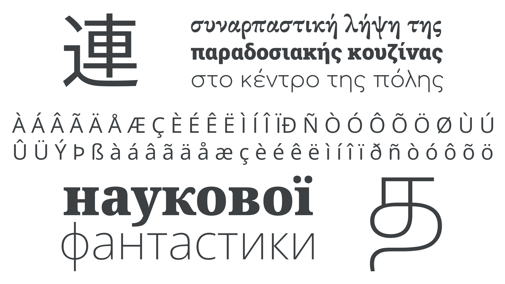

Script
By Google Fonts Knowledge contributors · Google Fonts Knowledge.
Original article · Source on GitHub · CC BY-SA 4.0. Text, illustrations and existing credits reproduced from the licensed Knowledge repository. Open Shelf adapted the layout and links; these adaptations are also CC BY-SA 4.0. No endorsement implied.
A script (not to be confused with the “script” classification of typefaces) is a visual representation of verbal speech, and, when combined with a set of usage conventions (known as an orthography), is one of the main components of a writing system.
Scripts can be used by one or more languages. For instance, although English, French, German, Norwegian, and Portuguese are distinct languages—with their own alphabets, conventions, and diacritic usage—they all use the Latin script.

Typefaces: EB Garamond, Roboto Slab, Comfortaa, Open Sans, Noto Serif, Noto Sans
Other scripts include Greek (upon which Latin is based), Cyrillic (originally based on uppercase Greek forms), Arabic, Korean, Indic scripts from South and South East Asia, Han characters, and the traditional scripts of Africa.